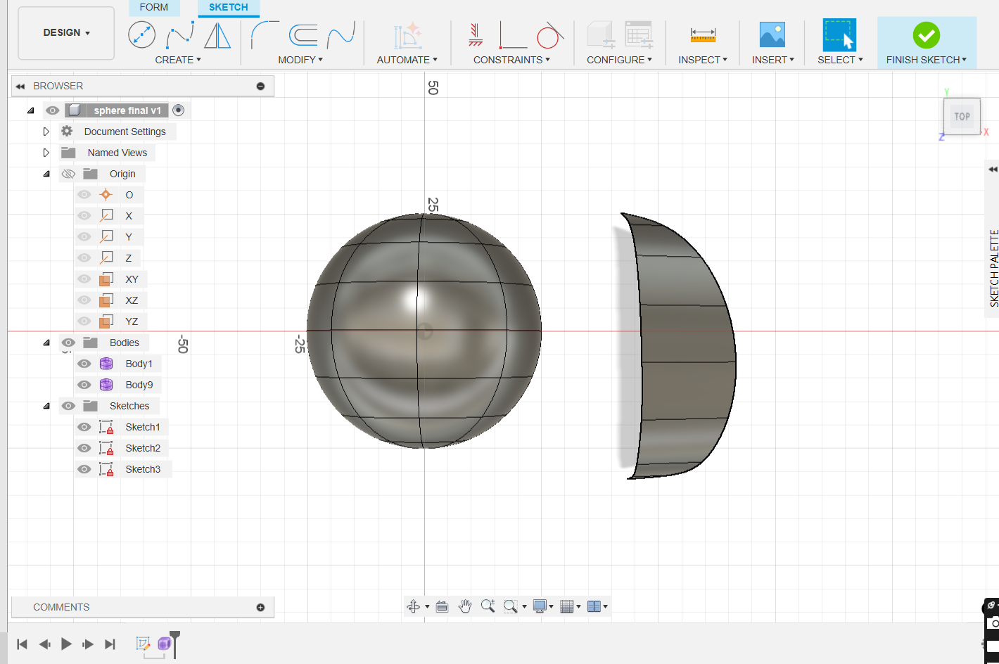
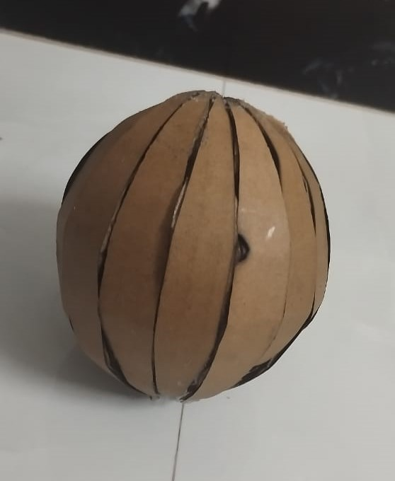

Project Title:Layered Geodesic Sphere for Laser Cutting
Objective
The goal of this assignment was to design a layered geodesic sphere using Fusion 360’s Form workspace, ensuring that the structure is optimized for laser cutting and assembly
Design Process:
Form Modeling in Fusion 360:
- Used Fusion 360’s Form workspace to sculpt a smooth geodesic sphere.
- Applied subdivision modeling techniques to create aesthetic and precise curvature.
- Ensured that each section aligns with the intended laser-cut structure.
Layered Slicing & Refinement:
- Divided the sphere into stackable sections while maintaining geometric accuracy.
- Adjusted thickness (1.5mm) per layer to ensure manufacturability.
Laser Cutting Preparation:
- Converted the 3D sculpted design into 2D DXF files for laser cutting.
- Ensured edge-to-edge connections for easy assembly.
- Optimized material usage by arranging slices efficiently.
Final Design:
- The layered sphere is designed for laser-cut fabrication and can be assembled seamlessly.
- The smooth organic shape created using Form tools adds a refined and technical aesthetic.
Software & Tools Used:
- Fusion 360 (Form workspace) – Freeform sculpting & modeling
- DXF Conversion – Exporting for Laser Cutting
Final Design
DXF File

OUTPUT
Conclusion:
This project provided valuable experience in Form modeling, subdivision techniques, and laser-cut optimization. The final design achieves both structural stability and aesthetic smoothness, making it ideal for precise fabrication.